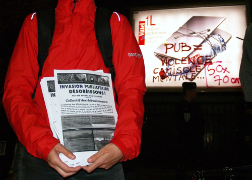

| |
Site dédié à la publication d'informations communiquées par le Collectif des déboulonneurs. En aucun cas ce site n'appelle à des actions illégales. | |
 |
||
|
Accueil du site > Paris > Compte rendu de l’action du 29 septembre 2006 à Paris
Ce vendredi 29 septembre 2006, à 19 h 30, la lumière dorée de la tour Eiffel ressort intensément sur le ciel chargé d’un orageux soir d’automne. De l’autre côté du pont d’Iéna, une demi-dizaine de fourgonnettes et un grand car de police stationnent au bout du bassin qui sépare la place de Varsovie du palais de Chaillot (16e arrondissement). C’est là que le Collectif des déboulonneurs a donné rendez-vous aux victimes de l’affichage publicitaire, pour sa neuvième action de désobéissance civile non-violente depuis novembre 2005. Un rendez-vous public annoncé, depuis quelques semaines, sur la Toile et, quelques jours plus tôt, sur France-Info (le 24), LCI (le 27), Ici et maintenant (le 28)… Il devrait y avoir foule. Hélas, sur les 500 Parisiens qui se disent « agressés par la publicité » (« Y en a marre, il faudrait vraiment faire quelque chose ! »), 150 sont à cette heure précise chez le dentiste pour une subite rage de dent, 150 autres enterrent leur grand-mère, et 150, enfin, déterrent leur dentiste : si bien qu’une cinquantaine seulement ont pu se rendre au rendez-vous. Parmi eux, deux élus parisiens : un adjoint au maire du 13e arrondissement (Jean-François Pellissier, Alternatifs) et le délégué au tourisme du 11e arrondissement (Jean-Christophe Mikhaïloff, Parti radical de gauche). Une quinzaine de journalistes (AFP, France-Inter, Le Parisien, Max, Zaléa TV…) et de photographes sont également présents. Négociations prolongées avec la police, dont certains éléments s’avèrent plus que compréhensifs à l’égard des Déboulonneurs… Du haut d’un tabouret, sur fond de tour Eiffel resplendissante, trois courtes prises de parole, à l’aide d’un porte-voix, le temps d’accueillir les participants, de rappeler le sens de l’action et d’évoquer l’actualité judiciaire victorieuse du collectif, après le jugement de début juillet, à Montpellier, lequel a suscité l’ire d’un des patrons de l’agence Publicis (Christophe Lambert) : ses propos rageurs (« Ce n’est pas une sanction, c’est un encouragement !… »), parus dans un quotidien régional (Le Midi-Libre, 5 juillet), sont livrés en pâture à l’assistance. Mais l’action proprement dite, un barbouillage rituel, doit se dérouler ailleurs. Tandis que, vers 20 heures, manifestants et journalistes gravissent les marches du palais de Chaillot et traversent l’esplanade des Droits de l’Homme, les véhicules de police contournent l’édifice pour rejoindre, place du Trocadéro, le reste des forces dépêchées sur place : une véritable armada sans doute prévue pour contenir les 500 publiphobes parisiens. 
Photo H. Leglise-Bataille
À l’angle de la place et de l’avenue Georges Mandel se trouvent quatre panneaux publicitaires déroulants de l’afficheur Avenir (groupe JCDecaux). La poésie nocturne de ce morceau du Paris bourgeois, agrémenté de marronniers, est pulvérisée par la lumière des affiches aussi agressives que banales. Des escabeaux et le tabouret sont installés devant les panneaux. Vers 20 h 15, sept barbouilleurs se lancent, armés de perches et de bombes de peinture, à l’assaut des odieuses façades vitrées ; au même instant, le maire adjoint du 13e est invité à prendre la parole dans le porte-voix. En deux ou trois minutes s’étale sur les panneaux lisses et aseptisés le discours antipublicitaire : « Pollution visuelle », « Pub = violence », « Camisole mentale », « Matraquage publicitaire », « Non à la pub ». Mais aussi « 50 x 70 », allusion à la revendication principale du collectif : la réduction du format des affiches publicitaires à 50 x 70 cm. Les forces de l’ordre, qui ont probablement reçu la consigne de patienter jusqu’à ce point seulement, entrent en action. Les militants n’opposent aucune résistance, se laissent descendre de leurs escabeaux et se retrouvent bientôt réunis à l’intérieur d’une fourgonnette. Sur le trottoir, tandis que des hommes en uniforme s’alignent devant les panneaux barbouillés et encerclent les sympathisants, ceux-ci chantent, notamment « Le Barbouilleur », une adaptation du « Déserteur » de Boris Vian. Après le départ du convoi, toutes sirènes hurlantes, deux ou trois orateurs, parmi lesquels l’élu du 11e, prennent la parole. Vers 20 h 30, dispersion dans le calme. Au commissariat de la rue de la Faisanderie (Paris 16e), les antipublicitaires sont interrogés séparément. Tous assument leur acte comme prévu (l’un d’eux allant jusqu’à déclarer que sa principale motivation est d’obtenir la Légion d’honneur). Trois d’entre eux se laissent prendre les empreintes des dix doigts et photographier de face et de profil. En revanche, tous refusent — de façon non concertée — de se soumettre au prélèvement de leur ADN, nouvelle obligation légale destinée au fichage génétique des criminels. Les barbouilleurs sont libérés les uns après les autres autour de 23 heures. Le Parisien du lendemain relate l’action, photo à l’appui. Voir le communiqué de presse |
|
Site utilisant SPIP - Hébergement Ouvaton
|